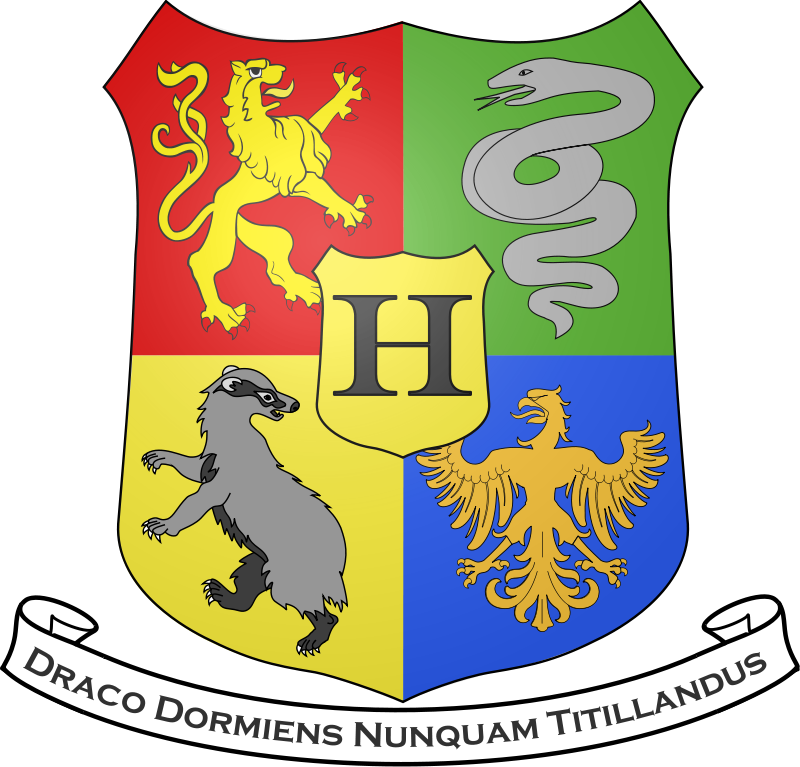

A Roxfort 1006-ban alapította a kor négy legnagyobb varázslója: Griffendél Godrik, Hugrabug Helga, Hollóháti Hedvig és Mardekár Malazár. Az alapítás dátuma nem véletlenszerű, hanem pontosan kiszámított volt...
Az alapítók közül Hollóháti Hedvig jeleskedett az asztronómia, és számmisztika tudományában, és ő tervezte el az alapítás dátumát. Az 1006, vagyis 1+0+0+6=7-tel, és a 7, mint legmágikusabb szám már eleve elég erőt adott volna egy ilyen nagyságú intézmény megalapításához, de az alapítók még arra is ügyeltek, hogy a Roxfort alapköveit március 21- én rakják le. Március 21-e a tavaszi napforduló, és ez az év legerősebb napja. Az építkezés egy évig tartott, mivel szinte mindent bűbájjalcsináltak. Bár a Roxfort mellett már alapításkor is létezett a Roxmorts nevű kis falu, és ezt is ellátták bizonyos mugliriasztó bűbájokkal, az alapítóknak ez sem volt elég. A Roxfortra még több mugliriasztó bűbájt (például: aki arra járt, hirtelen valami fontos dolga akadt, vagy egy különösen veszélyes táblával ellátott romot talált) hoppanálást és dehoppanálást gátló bűbájokkal, és egyéb varázslatokkal is.
A Roxfort 1007-ben kezdte meg működését. A diákok száma már az első alkalommal is nagyon magas volt. A Roxfort egyik különlegessége volt, hogy már az első alkalommal is járhattak mugli gyerekek. Az iskola első igazgatója Griffendél Godrik volt. Az igazgatóhelyettes pedig Hollóháti Hedvig lett.
A Roxfort első éveiben még nem volt ennyi tantárgy, mint manapság. Csak az akkoriban fontosnak talált tantárgyakat oktatták. Ezek a sötét varázslatok kivédése, a bűbájtan, bájitaltan, és átváltoztatástan volt. Nem véletlenül pont ezeket a tantárgyakat tanították, ugyanis ezek a tantárgyak voltak azok, amelyek, a középkori varázslótársadalomban fontosak voltak a mindennapi élethez.
A sötét varázslatok kivédését Griffendél Godrik tanította, a bűbájtan Hugrabug Helga, a bájitaltant Hollóháti Hedvig, Mardekár Malazár pedig az átváltoztatástant.
A diákok kezdetben nem a kiváló tanulmányi eredményük miatt tűntek ki. Természetesen ez nem mindig az ő hibájuk volt, mivel az iskolai rendszer nem volt még a legtökéletesebb. Azonban volt néhány kiemelkedő tanuló, akik nagy hírnevet szereztek az iskolának. Egyikük Rufus Meroland (egy mugli szármasú varázsló) fontos szerepet töltött be az akori reformációs kormányban, ugyanis államtitkárrá nevezték ki.
Az igazgatóság már az alapításnál sem működött túl harmónikusan, de amikor elkezdődött a tanítás még több konfliktusuk akadt. A főproblémát az jelentette, hogy Griffendél és Mardekár igen sok dologban nem értettek egyet. Mardekár javaslata az volt, hogy az iskolát Írországban építsék föl, ám Griffendél elvetette ezt az ötletet, majd később a folyamatos problémát a mugli tanulók jelentették. Mardekár azt szerette volna, ha csak aranyvérű varázslók tanulnak az iskolában, azonban a többi tagja az igazgatóságnak támogatta a mugli gyerekek taníttatását.
| Roxfort Boszorkány- és Varázslóképző Szakiskola | |
|  | |
| Mottó: | Draco dormiens nunquam titillandus („Alvó sárkányt soha ne ébressz fel”) |
|---|---|
| Iskola típusa: | mágusképző |
| Hely: | Egyesült Királyság, Skócia (pontosan nem ismert) |
| Beiratkozás: | A mágikus képességekkel rendelkező gyerekeket születésüktől fogva számon tartják, és 11 éves korukban levélben értesítik őket nyáron. |
| Állandó bentlakók: |
Rubeus Hagrid Firenze Sybill Trelawney Argus Frics Hóborc Félig Fej Nélküli Nick Véres Báró Szürke Hölgy Pufók Fráter Hisztis Myrtle |
„Azt bizonyára valamennyien tudják, hogy a Roxfortot több mint ezer éve – a pontos dátumot nem ismerjük –, alapította a kor négy legjelentősebb varázslója: Griffendél Godrik, Hugrabug Helga, Hollóháti Hedvig és Mardekár Malazár. Iskolánk négy háza az ő nevüket őrzi. Együtt építették fel ezt a kastélyt, távol a muglik lakta vidéktől. Akkoriban ugyanis az egyszerű emberek rettegtek a mágiától, s ezért tűzzel-vassal üldözték a boszorkányokat és varázslókat.” |
|